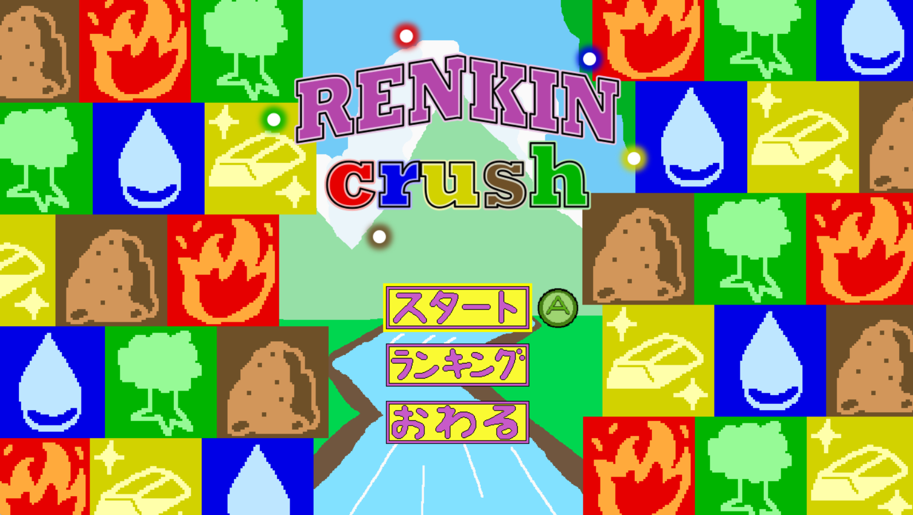
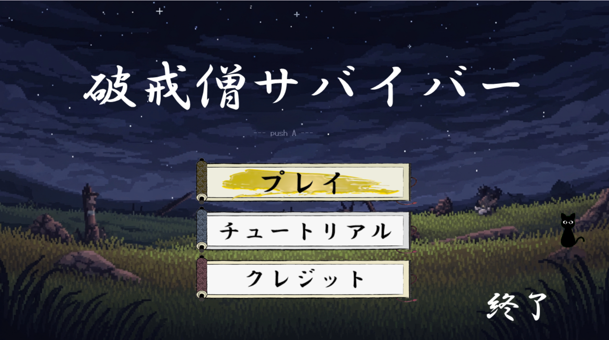
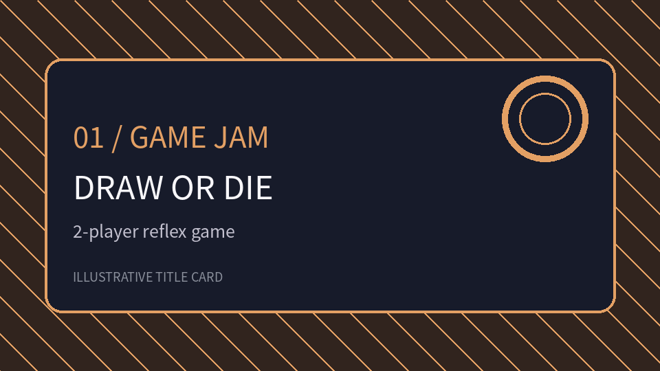
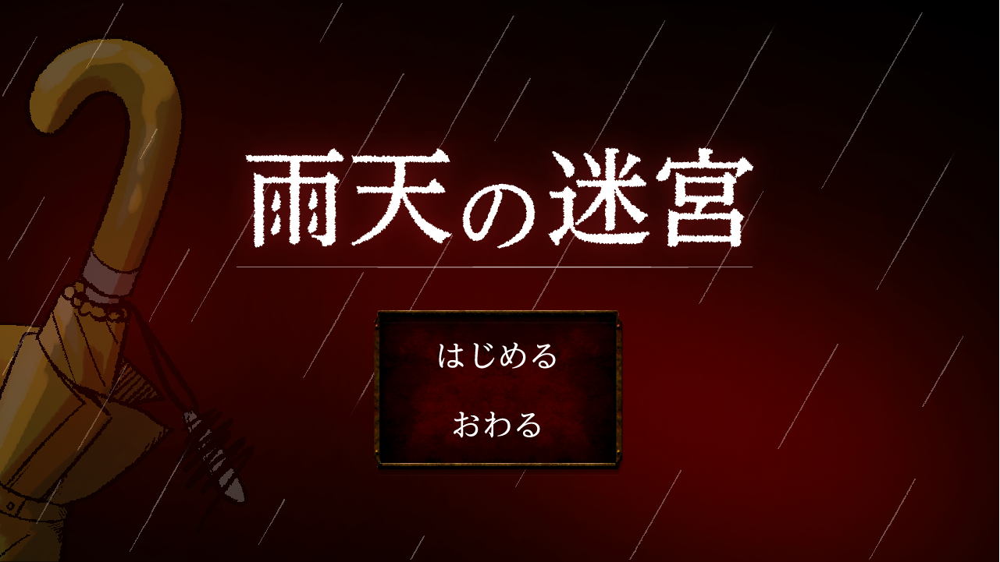

TOKYO GAME SHOW 202616チーム中3位で選出出展作品RENKINcrush
連鎖パズルへの仕様再設計を提案し、ChainCheck・Swapの企画と実装を担当。出展時の来場者アンケート11件も踏まえ、評価された点と課題を紹介します。
制作内容・改善過程を見るPORTFOLIO / 2028 GRADUATE
ゲームプランナー／ゲームプログラマー志望。チーム制作では企画・仕様設計・調整を中心に、技術作品では描画や実装の仕組みを学んでいます。
GAME DEVELOPMENT
完成作品・短期制作を通して、企画・仕様判断・実装の経験を紹介します。

TOKYO GAME SHOW 202616チーム中3位で選出出展作品連鎖パズルへの仕様再設計を提案し、ChainCheck・Swapの企画と実装を担当。出展時の来場者アンケート11件も踏まえ、評価された点と課題を紹介します。
制作内容・改善過程を見る


TECHNICAL PROJECTS
完成ゲームとは分けて、描画処理やプログラミングの学習成果を掲載します。